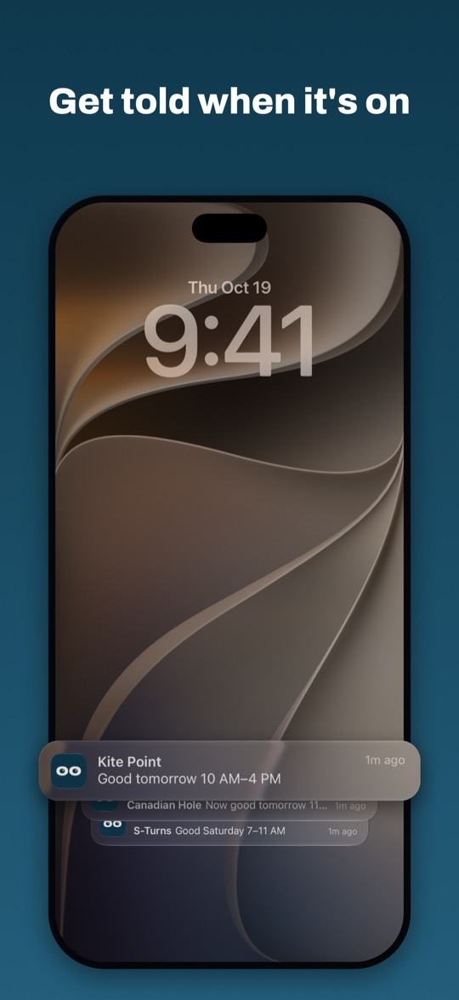
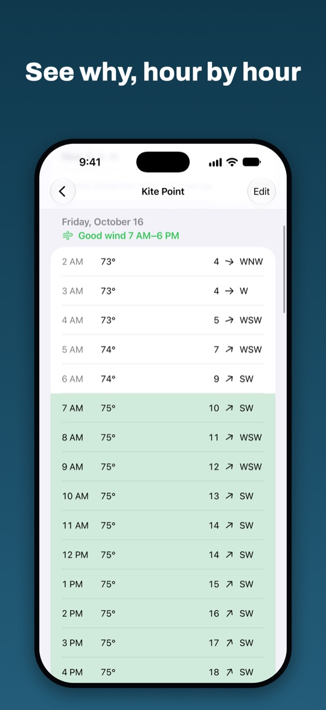
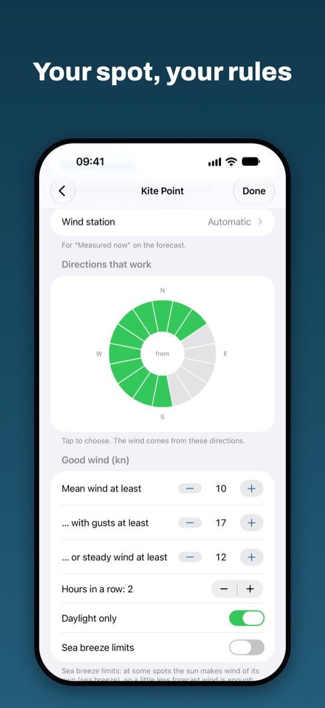
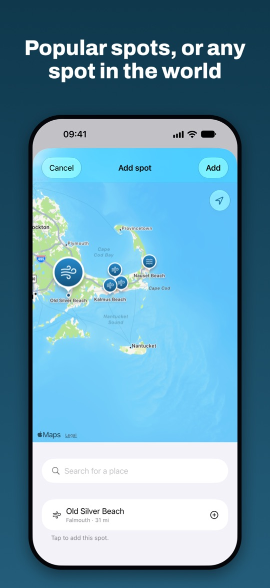

Every spot has its own rules
An onshore wind is great at one beach and useless at the next. Set the directions, wind, waves or fresh snow that work, spot by spot.
Told when it's on
A swoosh when good conditions come up, a gong when they're gone. Nothing at night. Spots that take a day trip or more can be weekend spots: they only count on your days off, and you hear about them days ahead.
Made with other riders
Start with popular spots near you or drop a pin anywhere. Spots are shared: once three locals follow one, their votes set its wind directions and limits, so it gets more precise the more riders use it. Keep the community's rules or set your own.
A tap on the shoulder, not another forecast site
Kookout tells you when it's worth taking a closer look. For the details, like wind maps, measurements, webcams and the local know-how, keep using the sites and apps you already know and like.

Best with the widgets
Put Kookout on your Home Screen and your Lock Screen. The spots that are good soonest are right there every time you pick up your phone, without opening anything.
That's where Kookout really shines: you see it's on before you'd even have thought to check. Long-press the Home Screen or the Lock Screen, tap Edit or Customise, and add Kookout.
Kookout in 30 seconds
Gary loves his charts. He also has a job. Kai just waits for the tap on the shoulder.





Wing foiling · kitesurfing · windsurfing · surfing · skiing
Kookout is new, and your feedback shapes it. Something off at your spot, a rule that doesn't fit, or an idea? Tell us. We read everything.
hi@kookout.no →No iPhone? The forecast with the same rules works in your browser too. The app adds notifications and community spots that get better as locals vote, with Sign in with Apple to share your own. The app adds notifications, Home and Lock Screen widgets, and community spots that get better as locals vote, with Sign in with Apple to share your own.
Open the web version →